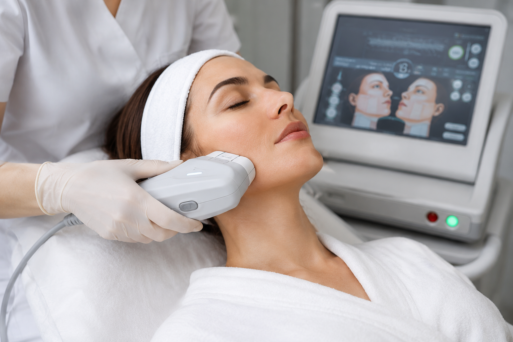
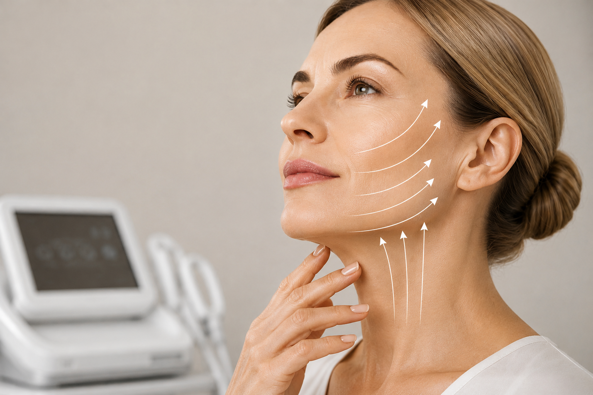
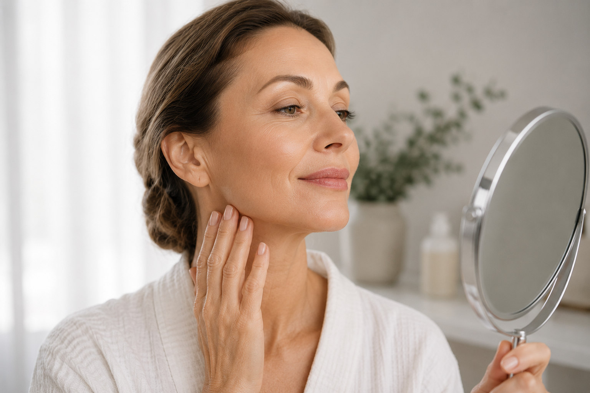

SMAS-лифтинг лица: современная подтяжка без операции
С возрастом кожа постепенно теряет упругость, контуры лица становятся менее четкими, появляются брыли, носогубные складки и второй подбородок. Эти изменения связаны не только с состоянием кожи, но и с ослаблением глубоких тканей лица. Именно поэтому кремы и поверхностные косметологические процедуры не всегда позволяют добиться выраженного лифтинг-эффекта.
Современная аппаратная косметология в Севастополе предлагает эффективное решение — SMAS-лифтинг лица. Это безоперационная методика омоложения, которая помогает подтянуть ткани, стимулировать выработку собственного коллагена и вернуть лицу более молодой и свежий вид без длительной реабилитации. Аппаратный SMAS-лифтинг рассматривается как альтернатива хирургической подтяжке для пациентов с умеренными возрастными изменениями, которые хотят избежать операции.

Что такое SMAS-лифтинг?
SMAS (Superficial Musculo-Aponeurotic System) — это поверхностная мышечно-апоневротическая система, своеобразный каркас лица, который поддерживает мягкие ткани. С возрастом этот слой постепенно теряет упругость, из-за чего ткани начинают смещаться вниз.
Во время процедуры сфокусированный ультразвук воздействует именно на уровень SMAS, не повреждая поверхность кожи. Под действием тепловых импульсов запускаются естественные процессы обновления тканей, активизируется синтез нового коллагена и эластина, благодаря чему кожа становится более плотной, а контуры лица — четче. Принцип работы основан на воздействии высокоинтенсивного сфокусированного ультразвука (HIFU) на глубину до уровня SMAS.
Какие проблемы помогает решить процедура?
SMAS-лифтинг рекомендуется пациентам, которые замечают первые или умеренно выраженные возрастные изменения.
-
Процедура помогает при:
- снижении упругости кожи;
- нечетком овале лица;
- появлении брылей;
- втором подбородке;
- опущении тканей средней трети лица;
- носогубных складках;
- возрастных изменениях шеи;
- дряблости кожи.
Методика подходит как женщинам, так и мужчинам, желающим сохранить естественную молодость без хирургического вмешательства.
Как проходит процедура?
Перед проведением SMAS-лифтинга в Севастополе врач-косметолог обязательно проводит консультацию, оценивает состояние кожи, выраженность возрастных изменений и исключает противопоказания.
-
Процедура включает несколько этапов:
- очищение кожи;
- нанесение специального проводящего геля;
- настройку аппарата под индивидуальные особенности пациента;
- обработку выбранных зон ультразвуковыми импульсами;
- нанесение успокаивающих средств и рекомендации по домашнему уходу.
В среднем сеанс занимает от 30 до 90 минут в зависимости от количества обрабатываемых зон. Во время процедуры пациент может ощущать легкое тепло или кратковременное покалывание. Эти ощущения считаются нормальными.
Когда будет заметен результат?
После процедуры многие пациенты отмечают ощущение более плотной кожи уже в первые дни.
Однако основной эффект развивается постепенно. Это связано с тем, что организму требуется время для выработки новых коллагеновых волокон. Максимальный результат обычно проявляется через 2–3 месяца, а эффект может сохраняться до 1,5–2 лет при соблюдении рекомендаций врача и правильном домашнем уходе.
Преимущества SMAS-лифтинга
-
Безоперационная подтяжка лица имеет ряд преимуществ:
- отсутствуют разрезы и швы;
- процедура не требует общего наркоза;
- минимальный восстановительный период;
- сохранение естественной мимики;
- постепенный и натуральный результат;
- стимуляция собственных процессов омоложения кожи;
- возможность быстро вернуться к привычному образу жизни
Именно поэтому SMAS-лифтинг сегодня считается одной из самых востребованных аппаратных процедур для омоложения.

Есть ли реабилитация?
Одним из главных преимуществ методики является короткий период восстановления.
-
После процедуры возможно:
- небольшое покраснение кожи;
- легкая отечность;
- незначительная чувствительность в зоне воздействия.
Как правило, эти проявления проходят самостоятельно в течение нескольких часов или нескольких дней. Врач может рекомендовать временно отказаться от посещения сауны, горячих ванн и интенсивных физических нагрузок.
Почему важно пройти консультацию косметолога?
Несмотря на безопасность процедуры, SMAS-лифтинг подходит не каждому пациенту. Только врач может определить, будет ли именно эта методика наиболее эффективной, или для достижения лучшего результата потребуется сочетание нескольких косметологических процедур.
В ЗимаКлиник каждому пациенту разрабатывают индивидуальный план омоложения. Специалисты учитывают возраст, состояние кожи, выраженность возрастных изменений и пожелания пациента. Комплексный подход и сопровождение до достижения результата являются одним из основных принципов работы клиники.
SMAS-лифтинг в ЗимаКлиник
Если вы хотите вернуть коже упругость, подчеркнуть контуры лица и выглядеть моложе без операции, SMAS-лифтинг в Севастополе может стать эффективным решением.
На консультации врач-косметолог оценит состояние кожи, подробно расскажет о возможностях процедуры и подберет индивидуальный протокол омоложения. Благодаря современным аппаратным методикам можно добиться выраженного, но при этом естественного результата без длительной реабилитации.
